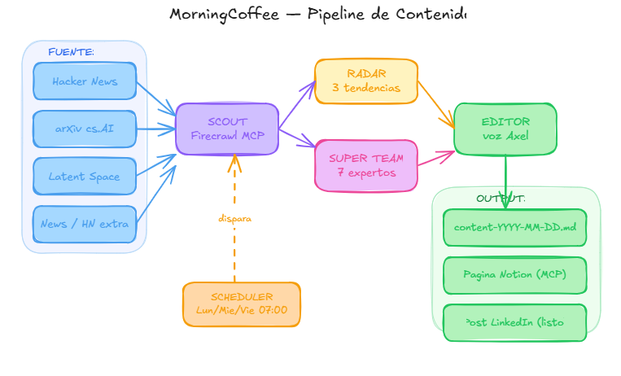

De un asistente individual a un crew de agentes autónomos que colaboran, se despliegan y tienen manos y herramientas para accionar.
Axel Laban Arzubi · eCommerce Institute · 1 hora
Imaginá que te despertás, agarrás una taza de café, te sentás en la compu. Antes de leer el primer mail, tu sistema de agentes o empleados digitales:
Te dejaron el "periódico" personalizado (por tu equipo de research & marketing) con un mapeo de las noticias del día, ideas de contenido, tendencias, reportes de tu rubro para vos.
Te dejaron un brief ejecutivo (por tu secretaria/o) con puntos importantes y proximos pasos en base a tus objetivos de todas las reuniones que tuviste ayer.
Y te prepararon un perfil completo de todas las personas con las que te vas a reunir hoy, cada uno quien es, que trayectoria tiene y que empresa representa, y qué angulo te importa a vos y puntos de conversacion puede haber.
| BLOQUE 1 | 📍 Recap: de asistente a crew · el stack · vocabulario clave · cuándo NO usar multiagente. | 10 min |
| BLOQUE 2 | ⚙️ El motor: Claude Cowork · Antigravity · Claude Code · 4 niveles de autonomía · tareas programadas. | 9 min |
| BLOQUE 3 | 🔌 MCP + Skills: el USB-C para AI · catálogo por caso de uso · skills modulares · las 4 C del AIOS. | 12 min |
| BLOQUE 4 | ☕ Live Build · Morning Coffee: 3 agentes que corren mientras dormís — Meeting Prep · Briefing Ejecutivo · Content Creator. | 22 min |
| BLOQUE 5 | 🏁 Cierre: costos reales · cuando se rompe · entregables · próximos pasos. | 4 min |
57 min · Menos teoría, más hands-on. Te vas con un sistema Morning Coffee de 3 agentes funcionando, 3 skills y el blueprint de las 4 C para armar tu propio sistema.
En la Clase 2 construimos Indio — un agente con RAG, HITL y personalidad. Hoy damos el salto: un equipo de empleados digitales que colaboran entre sí y se despliegan en la nube.
Antes de seguir, ordenemos las piezas. Todo agente que vas a construir tiene tres capas que se preguntan cosas distintas.
Cerebro
El LLM que razona y elige el siguiente paso.
Runtime
El motor que ejecuta. De cero-setup a control total.
Taller
Los IDEs y builders donde lo construís y lo iterás.
Vocabulario rápido. Cada concepto, su metáfora.
🎙️ Prompt · la voz del turno
🧬 System Prompt · el ADN/rol
👁️ Contexto · lo que ve ahora
💾 Memoria · lo que persiste
🔥 Token · la unidad de pago
📖 Knowledge Base · la biblioteca propia
🔍 RAG · ir a la biblioteca antes de hablar
⚠️ Alucinación · inventar con cara seria
🚧 Guardrails · lo que NO puede decir/hacer
👤 HITL · permiso humano en lo crítico
🎯 Agencia · elige los pasos solo
✋ Tools · las manos (funciones)
📓 Skills · cuadernos que carga
📞 API · teléfono entre programas
🕸️ MCP · sistema nervioso universal
💡 LLM piensa + RAG sabe + Tools hace + Skills se especializa + MCP conecta todo
En 2026, el IDE dejó de ser un editor de texto. Es el centro de comando de agentes autónomos. Estos son los tres entornos que importan según tu rol.
Agente de escritorio de Anthropic. GA en Abril 2026. Sin terminal.
IDE agentic de Google (Nov 2025). Fork de VS Code. Gratis en preview.
CLI agentic de Anthropic. Para terminal-natives. La base de Cowork.
Otro eje, distinto del Stack. El Stack te dice de qué está hecho un agente. La autonomía te dice cuánto decide solo.
Zapier, Make. Si X → entonces Y. Determinístico. El humano diseñó cada paso.
n8n + AI Agent node. El LLM elige qué hacer en un punto del flujo. El resto, programado.
El LLM planifica, ejecuta tools, evalúa el resultado y vuelve a iterar. (Clase 2)
→ Acá viven los Custom GPTs, los Gems de Gemini y los Proyectos de ChatGPT: un agente con system prompt, RAG y tools, encerrado en un solo chat.
Varios agentes que se reparten roles, se pasan trabajo y corren solos. (Clase 3 · hoy)
La diferencia entre un asistente y un empleado digital es la proactividad: no esperan a que les hables. Cada runtime tiene su forma de programar tareas autónomas.
| Runtime | Cómo se programa | Dónde corre | Cuándo usarlo |
|---|---|---|---|
| Perplexity Tasks | UI: prompt + frecuencia + canal | Cloud Perplexity | Research recurrente con web. Zero setup, máxima velocidad. |
| Claude Cowork | Scheduler nativo: "todos los días a las 7 AM, hacé X" | Tu máquina (background) | Tareas que tocan archivos locales, Chrome, apps de escritorio. |
| Claude Code (rutinas) | Headless mode + GitHub Actions / cron / Managed Agents | Cloud (sin tu compu) | Producción 24/7. No depende de que tengas la laptop prendida. |
| n8n | Cron node + AI Agent node | VPS / n8n Cloud | Cuando necesitás lógica custom, integraciones raras o branching complejo. |
| Gemini Scheduled Actions | UI built-in dentro de Gemini | Cloud Google | Si vivís en Google Workspace: Gmail, Calendar, Drive, Meet ya conectados. |
Antes: 1 connector por LLM por tool (Claude↔Drive, GPT↔Drive, Gemini↔Drive). Con MCP: 1 server, lo usan todos los agentes. Un único estándar.
# Cowork · agregar un MCP server de Notion
Settings → Connectors → Add MCP Server
name: "Notion"
url: "https://mcp.notion.com/mcp"
auth: OAuth
# El agente descubre las tools en runtime:
→ search_pages, get_page, create_page...
→ sin escribir una línea de códigoHoy hay +10.000 servers MCP públicos. Esto es lo que podés conectar mañana mismo, agrupado por para qué sirve.
Donde vive tu trabajo del día a día.
Google Calendar · meetings, eventos
Google Drive · docs, research
Notion · wiki, bases, páginas
Asana / Linear · tickets, sprints
Todoist · personal todos
Donde el agente avisa, escala, conversa.
Gmail · triage, drafts, send
Slack · alertas a canales / DMs
Telegram · alertas críticas 1-a-1
WhatsApp Business · clientes
Discord · comunidades
La biblioteca y los archivos del agente.
Filesystem · archivos locales
NotebookLM · RAG consistente
Postgres / Supabase · queries SQL
Google Sheets · datos dinámicos
Airtable · bases relacionales
Para llegar afuera de tus apps.
Firecrawl · scraping de sitios
Brave Search · web search
Browserbase · navegador headless
YouTube · transcripts, búsqueda
arXiv / PubMed · papers
Para builders y operación técnica.
GitHub · PRs, issues, código
Vercel · deploys, logs
Cloudflare · DNS, workers, R2
Sentry · errores en producción
Docker · containers
Donde se mueve la plata y los clientes.
Stripe · pagos, suscripciones
HubSpot / Salesforce · CRM
Tiendanube / Shopify · e-commerce
QuickBooks · contabilidad
Zapier MCP · 6.000+ apps más
Una Skill es una carpeta con instrucciones, scripts y ejemplos que Claude carga sola cuando la necesita. No vos.
# Estructura mínima
mi-skill/
├── SKILL.md # obligatorio
├── scripts/ # opcional
└── resources/ # opcional
---
name: scoring-leads-notebooklm
description: "Puntúa un lead cruzando
datos del CRM contra cierres históricos.
Usar cuando llega un lead nuevo."
---
Cuando recibas un lead:
1. Leé datos del CRM (tool: notion_query)
2. Compará contra el notebook (notebooklm)
3. Score 0-100 + razones + próxima accióndescription es el trigger. Claude escanea las descripciones de tus skills y carga solo las relevantes. Buena descripción = skill que se usa. Mala = skill que duerme.
Mapeo de las noticias del día, ideas de contenido, tendencias y reportes de tu rubro personalizados para vos.
Usa: Web Search + RSS + LLM para curation.
Lee transcripts de reuniones de ayer y extrae puntos importantes y próximos pasos alineados a tus objetivos.
Usa: Transcripts + Contexto de negocio.
Prepara un perfil completo de cada participante de tus reuniones de hoy: trayectoria, empresa, y ángulos de conversación.
Usa: Calendar + Web Search + LinkedIn.
1 orquestador + 7 skills-expertos: Hormozi · Ogilvy · Gary Vee · Brunson · Sabri Suby · Cole Gordon · Daniel G. Cada uno con su voz y sus frameworks.
Usa: bootcamp, auditoría, brainstorming de campañas.
La meta-skill. Le pedís "creame una skill para X" y te arma la estructura, el SKILL.md, los scripts y los ejemplos. Oficial de Anthropic.
Usa: construir tu librería sin tocar YAML.
Ya conocés las piezas sueltas. Ahora: cómo se ensamblan en un sistema que funcione como un equipo real. El AIOS se construye sobre 4 pilares, en este orden.
¿Quién sos y qué importa?
Archivos con tu identidad de negocio, prioridades, tono de voz y lo que vendés. Carpetas como about-business/ y priorities/ que hacen que el agente responda como un miembro más del equipo.
¿A qué tiene acceso?
La IA sola no tiene tus datos. Conectala a tus herramientas diarias vía MCP servers o APIs: ClickUp, Slack, Google Workspace, tu CRM, tu base de clientes.
¿Qué sabe hacer?
Skills reutilizables — SOPs escritos una sola vez. "Cómo redactar y publicar en LinkedIn", "cómo puntuar un lead". Archivos Markdown que el agente carga cuando los necesita.
¿Cuándo trabaja solo?
El nivel más avanzado. Configurás rutinas en la nube o cron jobs para que el AIOS ejecute tareas mientras dormís o tenés el ordenador apagado.
Definir el "Alcance del Trabajo" (Scope of Work) mediante Wireframes.
Antes de cerrar una venta o empezar a construir, es muy recomendado mapear visualmente todo el proceso (hacer un wireframe).
Sirve para crear un manual de instrucciones claro y asegurar que vos y los implicados que construyen estén completamente alineados sobre lo que se va a construir.

Te despertás, agarrás una taza de café, te sentás en la compu. Antes de leer el primer mail, tu sistema de agentes ya te dejó tres entregables esperando.
Un research completo de todas las meetings que vas a tener hoy: quién es cada participante, qué hace su empresa, talking points y red flags.
Un brief con puntos importantes y next steps de las reuniones de ayer, leído desde los transcripts y alineado con tus objetivos y los del cliente.
Un mapeo de las noticias del día para generar contenidos: detecta tendencias, redacta posts virales, optimiza retención y aprende solo qué funciona.
Todos los días a las 7 AM, un agente lee tu Calendar, investiga a cada participante de tus reuniones, y te deja un briefing ejecutivo esperándote en un dashboard. 5 minutos antes del call, ya sabés quién es cada uno.
Claude Cowork (tareas programadas)
MCP Calendar + Web Search
NotebookLM (contexto tuyo / empresa)
Dashboard en GitHub + Vercel
# System Prompt — Meeting Prep
Sos analista ejecutivo. Corrés a las 7 AM.
## Proceso:
1. MCP Calendar → eventos de hoy
2. Por evento con >1 externo:
· Web search por participante
· NotebookLM: historial empresa
· 3 talking points + red flags
3. POST JSON al dashboard
## Reglas:
- Sin info → "no encontrado", NO inventes
- Internos → skip
- Próximas 2h → prioridad altaComplementa al anterior. Mientras el Meeting Prep mira hacia adelante (las reuniones de hoy), este mira hacia atrás: lee los transcripts de las reuniones de ayer, los cruza con tus objetivos y los del cliente, y te deja un brief con next steps.
Claude Cowork (tarea programada 7 AM)
Transcripts de las meetings de ayer (Drive / Otter / Granola)
Tus OKRs + objetivos del cliente
Actualizar el dashboard HTML del paso anterior con el brief
Cada mañana, mientras dormís, un crew de 7 expertos de marketing detecta tendencias, redacta posts virales con tu voz, optimiza retención y aprende solo qué funciona.
Tu voz de marca, audiencia, temas, posts que funcionaron. Carpeta brand-voice/
MCP Firecrawl · RSS de tu nicho.
7 skills del AI Super Team: Hormozi · Ogilvy · Gary Vee · Brunson · Sabri Suby · Cole Gordon · Daniel G.
Tarea programada 7 AM. Output directo a Notion.
| Componente | Plan usado | Costo mensual |
|---|---|---|
| Claude Cowork (orquestador principal) | Pro | ~$20 |
| Firecrawl (scraping) | Gratis (hasta 500 req/mes) | $0 |
| Google Calendar (eventos) | Gratis | $0 |
| tl:dv (transcript) | Free tier | $0 |
| Excalidraw (mapeo) | Gratis | $0 |
| Notion (dashboard) | Gratis | $0 |
| NotebookLM (fuente de verdad) | Gratis | $0 |
| Total estimado del stack completo | ~$20 USD/mes | |
Los agentes fallan. Mucho. Revisar el historial de acciones es el 80% del trabajo real — y nadie lo enseña. Tu checklist mental de 60 segundos antes de pedir ayuda.
1 orquestador + 5 expertos de marketing y ventas como skills de Claude: Hormozi · Ogilvy · Gary Vee · Brunson · Sabri Suby
En Clase 2 viste cómo se construye un agente. En Clase 3 lo multiplicaste en un equipo.
Lo que viene no es más teoría. Es implementar tu caso real — el cuello de botella con el que entraste al programa — y hacerlo correr. Con tu 1:1 quincenal tenemos el espacio para que no quede en idea.
El proceso que te duele más. Uno solo. No intentes con tres.
Feo, con errores, que funcione. La perfección mata proyectos.
Los agentes se rompen. Depurar es el 80% del trabajo real.
Nos vemos en tu próximo 1:1. Con el flujo corriendo.
Axel Laban Arzubi · eCommerce Institute · Programa AGENTIC · Clase 3